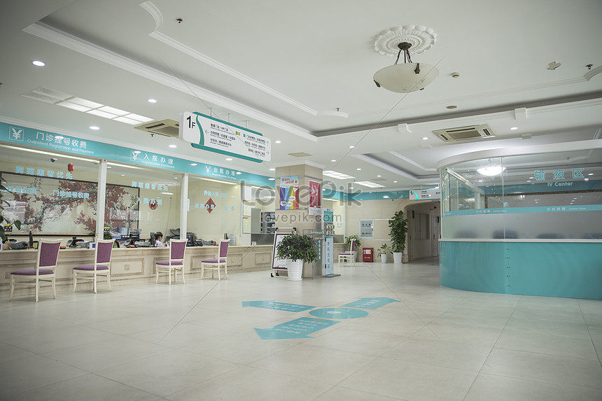

Pelayanan Rawat Jalan

Rawat Jalan merupakan pelayanan medis kepada pasien untuk tujuan observasi diagnosis, pengobatan, rehabilitasi, dan pelayanan kesehatan lainnya tanpa mengharuskan pasien tersebut dirawat inap.
Poliklinik Rawat jalan terletak di lantai dasar. Poliklinik Rumah Sakit Indah Laraswati memiliki Dokter Spesialis terdiri dari :
a. Pelayanan Poliklinik Spesialis :
- Spesialis Anak
- Spesialis Penyakit Dalam
- Spesialis Bedah Umum
- Spesialis Kebidanan dan Kandungan
- Spesialis THT
- Spesialis Saraf
b. Pelayanan Poliklinik Umum / Medical Check Up (MCU)
c. Pelayanan Poliklinik Gigi
d. Pelayanan Rawat Jalan Lainnya :
- Voluntery Counseling and Testing (VCT)
- Pojok DOTS
- Pelayanan KB
Pendaftaran Pelayanan :
| Hari | Mulai | Istirahat | Pulang |
| Senin s/d Kamis | 07:00 | - | 14:00 |
| Jum'at | 07:00 | 11:30 - 13:00 | 14:00 |
.